Interfeysdan tortib, uning ortida ishlaydigan tizimgacha — loyihaning turli qismlari ustida ishlayman. Saytlar, savdo botlari va ma’lumot bilan ishlaydigan yordamchilar yarataman.
Yuzlab talabalar bilan ishlash jarayonlarini yagona tizimga birlashtirdim.
Muammo
Kompaniya yuzlab talabalar bilan ishlay boshlagach, Excel jadvallari orqali barcha jarayonlarni kuzatish qiyinlashdi. Shartnomalar, bo‘lib to‘lash, hujjatlar, universitet arizalari va viza tayyorlash bir-biriga bog‘liq edi. Jamoaga har bir talabaning tafsilotlarini ham, umumiy holatni ham ko‘rish va jarayonni nima to‘xtatayotganini aniqlash kerak edi.
Men nima qildim
Tizimni har bir ish jarayoni uchun bosqichma-bosqich qurishni taklif qildim va ishlarni yagona platformaga birlashtirdim.
Moliya. Talabalar, shartnoma turlari, bir martalik va bo‘lib to‘lanadigan to‘lovlar, xarajatlar va jo‘natma narxlarini kuzatish.
Hujjatlar. Yig‘ilgan va yetishmayotgan hujjatlar, asl nusxalar va ko‘chirmalar, tarjima, notarial tasdiqlash va apostil jarayonlari hamda kerakli nusxalar sonini boshqarish.
Arizalar. Universitet va yo‘nalish tanlash, talablar, shakllar, insholar, suhbatga tayyorgarlik, qabul natijalari va keyingi viza jarayonini kuzatish.
Jamoa va fayllar. Vazifalarni biriktirish, bajarilishini kuzatish, fayllarni yuklash va ko‘rish, kechikkan vazifalar va jarayonni to‘xtatayotgan hujjatlarni aniqlash.
Jo‘natmalar. Qaysi hujjatlar qaysi talaba uchun jo‘natilgani, qayta ishlangan hujjatlar soni va jo‘natma xarajatlarini bir joyda kuzatish.
Ma’lumotlar bazasiga so‘rov yuboradigan AI yordamchini ham qo‘shdim. Xodimlar universitetga topshirgan va qabul qilingan talabalar, oylik pul oqimi, kechikkan vazifalar yoki hujjatlardagi to‘siqlar haqida savol berib, javob va tahlil olishlari mumkin.
Nima hal bo‘ldi
Jamoa har bir talabaning butun yo‘lini boshqarish, hujjatlarni ko‘rish, pul va mas’uliyatlarni kuzatish hamda ish qayerda to‘xtab qolganini tushunish uchun yagona tizimga ega bo‘ldi.
02
Proteco Sharq
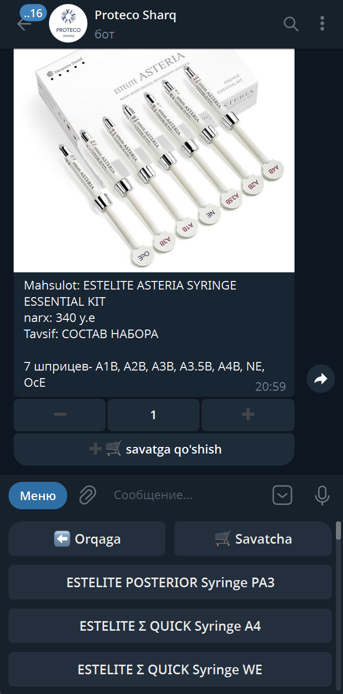
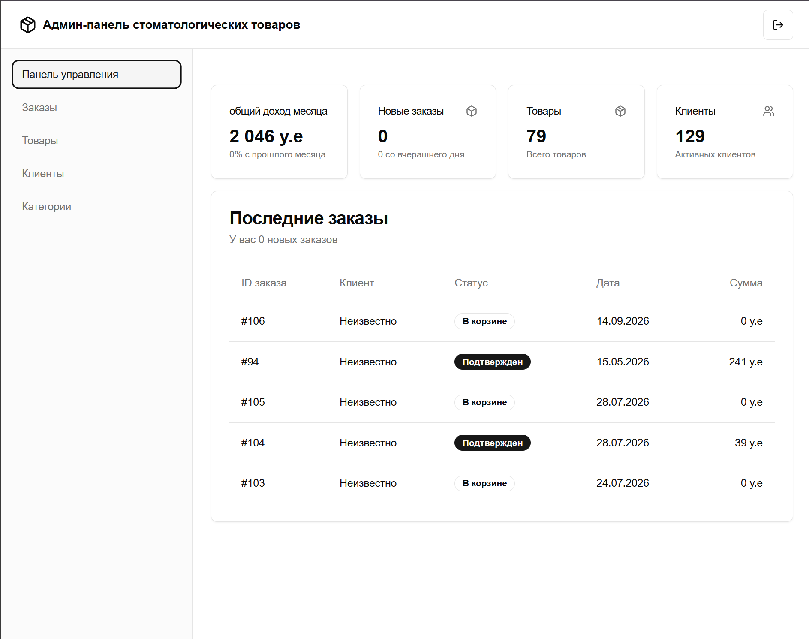
Boshqaruv paneli
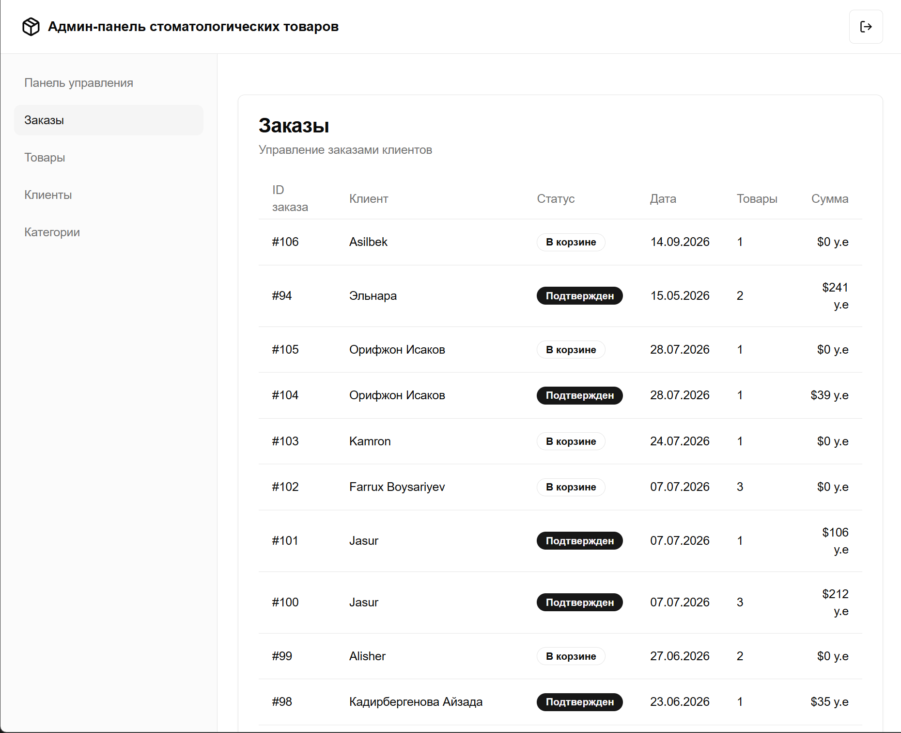
Buyurtmalar
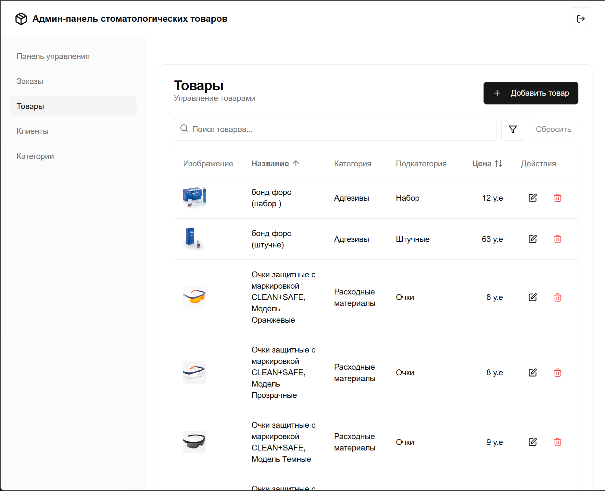
Mahsulotlarni boshqarish
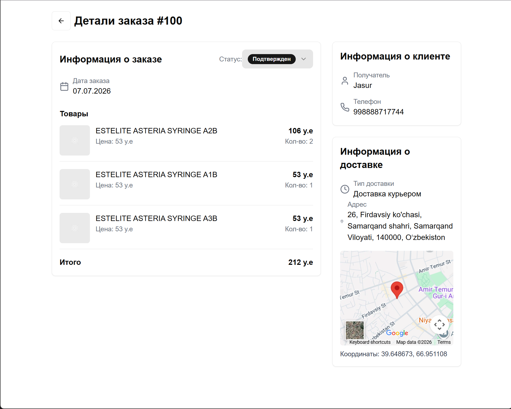
Buyurtma tafsilotlari
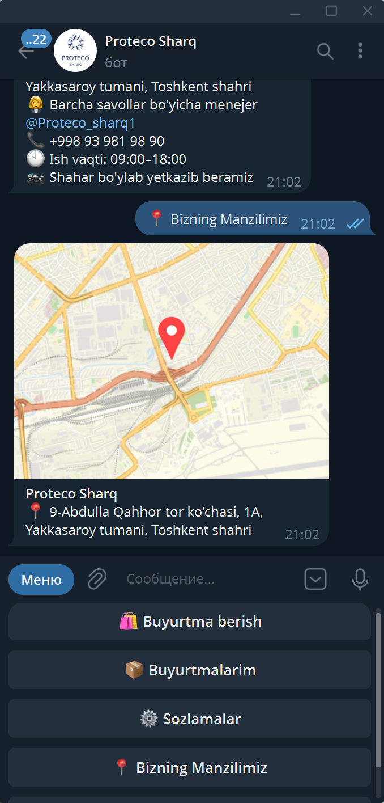
Telegram bot va manzil
Telegram orqali savdo va uni boshqarish uchun bot va panel.
Muammo
Proteco Sharq onlayn savdoga chiqmoqchi edi. Ular savdo uchun Telegramdan foydalanishar, ko‘pchilik mijozlar esa buyurtma berish uchun Telegram bot so‘rashardi.
Men nima qildim
Birgalikda bot qanday ishlashi va qanday ko‘rinishda bo‘lishini kelishib oldik. Shu talablar asosida botni yaratdim. Keyin savdo, mijozlar va yetkazib berishni boshqarish uchun oddiy boshqaruv panelini ishlab chiqdim.
Nima hal bo‘ldi
Kompaniya mijozlar so‘ragan Telegram savdo kanaliga va uning ortidagi ishlarni boshqarish uchun panelga ega bo‘ldi.
03
Oy-gul
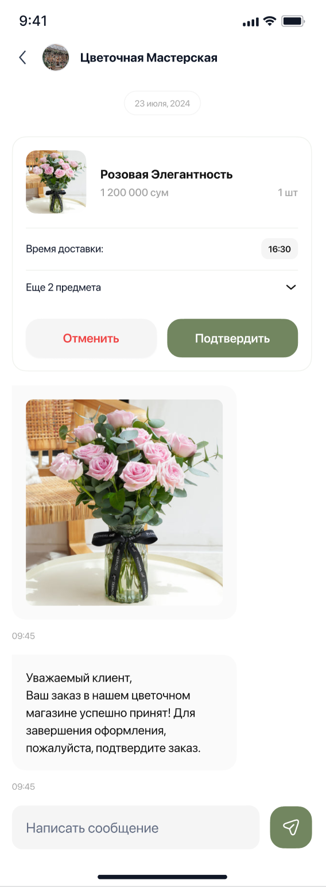
Buyurtma va suhbat bir oynada
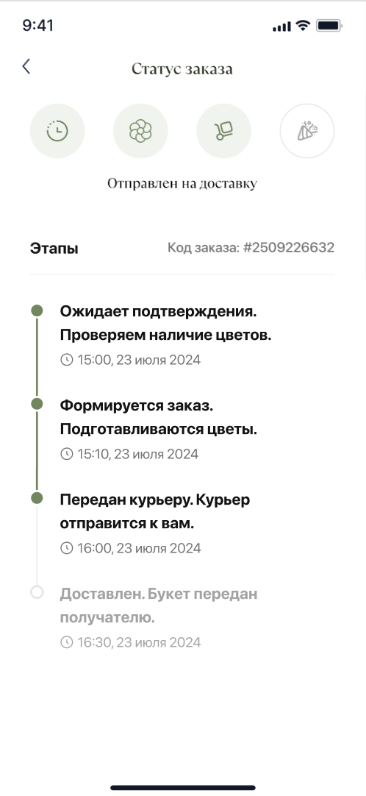
Buyurtma holatini kuzatish
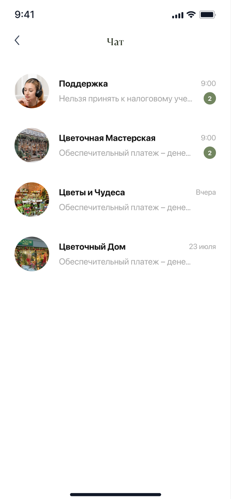
Suhbatlar bir joyda
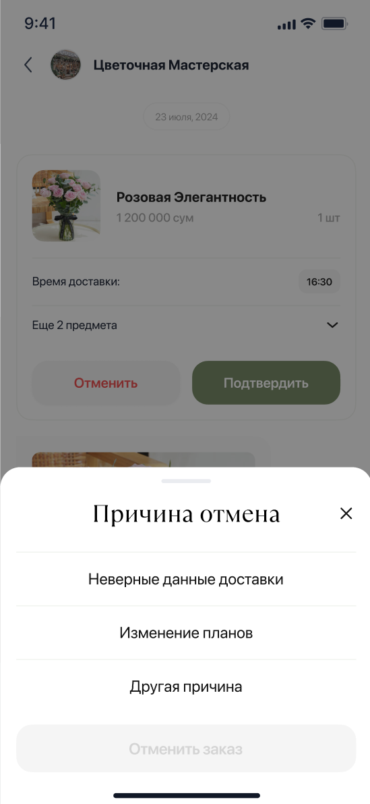
Buyurtmani boshqarish
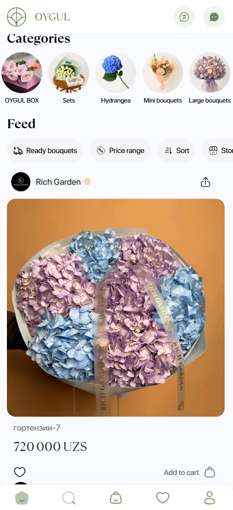
Gullar va do‘konlar
Masshtablanadigan backend va buyurtmalar bilan bog‘langan real vaqt chati.
Muammo
Oy-gul uchun boshidanoq masshtablanadigan, kompaniyaning o‘z jismoniy serverlarida ishlay oladigan backend kerak edi. U veb va mobil ilovalarga API orqali xizmat ko‘rsatishi, xabarlar va bildirishnomalarni qayta ishlashi kerak edi.
Men nima qildim
Backend arxitekturasi. Mikroservislar va klasterlar bilan ishlaydigan backendni loyihaladim va yaratdim. Veb va mobil ilovalar uchun APIlar hamda xabarlar va bildirishnomalar uchun navbat tizimini ishlab chiqdim.
Real vaqt chati. Frontendda matnli xabarlar, fotosuratlar va fayllarni qo‘llab-quvvatlaydigan chatni yaratdim. Chat ichida buyurtmani tasdiqlash, holatini ko‘rish va bekor qilish amallarini ham qo‘shdim.
Nima hal bo‘ldi
Backend arxitekturasi o‘z serverlarida ishlash va masshtablanish talablariga mos qurildi. Chat esa suhbat, media va buyurtma amallarini bir joyga jamladi: foydalanuvchilar yozishma ichida buyurtma bilan ishlashlari mumkin.
04
Said-Maxim
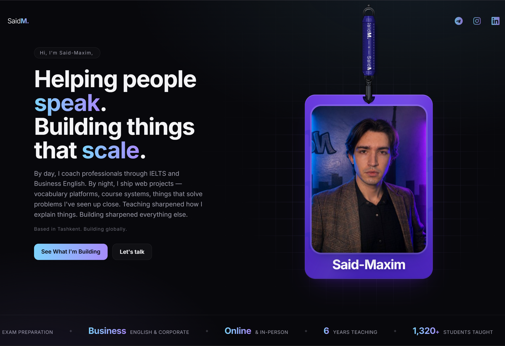
Vazifa
Said-Maxim o‘zi uchun shaxsiy portfolio sayti yaratmoqchi edi. Asosiy vazifa uning didiga mos dizayn yo‘nalishini topish edi.
Men nima qildim
Avval u haqida va unga nimalar yoqishini gaplashdik. Shunga asoslanib bir nechta dizayn g‘oyalarini taklif qildim. Unga yoqqan jihatlarni birgalikda muhokama qilib, g‘oyalarni rivojlantirdik va yakuniy dizaynni tanladik. Keyin shu dizayn asosida saytni ishlab chiqdim.
Natija
Uning istaklari asosida, birgalikda tanlangan dizaynga ega shaxsiy portfolio sayti yaratildi. Dizayn va dasturlash ishlarini o‘zim bajardim.